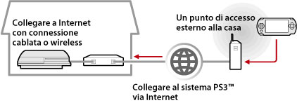
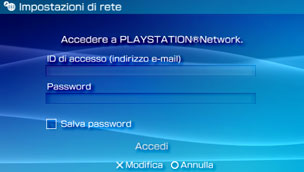

Rete > Utilizzo della riproduzione remota (tramite Internet)
Utilizzo della riproduzione remota (tramite Internet)
Per utilizzare questa funzione, potrebbe essere richiesto l'aggiornamento del software del sistema PS3™ e del sistema PSP™.
Utilizzando il sistema PSP™ e un punto di accesso wireless, ad esempio attraverso un servizio di hotspot wireless commerciale (LAN wireless), è possibile collegarsi via Internet al sistema PS3™ a casa. Per utilizzare la riproduzione remota da fuori casa, impostare il sistema PS3™ nella modalità di standby della connessione di riproduzione remota.

Nota
Il metodo di utilizzo di un servizio hotspot wireless commerciale (LAN wireless) e le relative tariffe variano a seconda del fornitore del servizio. Per ulteriori informazioni, rivolgersi al provider di servizi.
Preparazione (1) (sistemi PS3™ e PSP™)
Per utilizzare la riproduzione remota per la prima volta, dovete registrare (operazione di pairing) il sistema PSP™ con il sistema PS3™. Il sistema può essere registrato in  (Impostazioni) >
(Impostazioni) >  (Impostazioni di riproduzione remota) > [Registra dispositivo].
(Impostazioni di riproduzione remota) > [Registra dispositivo].
Preparazione (2) (sistema PS3™)
Impostare il sistema PS3™ per l'ingresso nella modalità standby. Impostare [Avvio remoto] su [On] per accendere il sistema PS3™ dal sistema PSP™.
1. |
Eseguire i seguenti passaggi sul sistema PS3™:
|
|---|---|
2. |
Spegnere il sistema PS3™. |
 (Utenti).
(Utenti). (Spegni sistema) per spegnere il sistema e portarlo nella modalità standby. Accertarsi che la spia dell'alimentazione sia illuminata in rosso e sia fissa (non intermittente).
(Spegni sistema) per spegnere il sistema e portarlo nella modalità standby. Accertarsi che la spia dell'alimentazione sia illuminata in rosso e sia fissa (non intermittente).Nota
Per i dettagli sulle impostazioni descritte nel punto 1, vedere (Impostazioni) > (Impostazioni di riproduzione remota) > [Avvio remoto] in questa guida.
Preparazione (3) (sistema PSP™)
Creare una connessione di rete per collegare il sistema PSP™ a un punto di accesso. Per utilizzare la riproduzione remota via Internet, è possibile utilizzare un punto di accesso quale ad esempio un servizio hotspot wireless commerciale (LAN wireless). Per ulteriori informazioni, consultare la guida utente per il sistema PSP™.
Utilizzo della riproduzione remota
1. |
Sul sistema PSP™, selezionare |
|---|---|
2. |
Selezionare [Collega via Internet]. |
3. |
Selezionare nell'elenco la connessione al punto di accesso da utilizzare per la riproduzione remota. |
4. |
Immettere l'ID e la password di accesso a PlayStation®Network per l'account in uso sul sistema PS3™.  Quando la connessione avviene correttamente, la schermata del sistema PS3™ viene visualizzata sul sistema PSP™. |
 (Rete) >
(Rete) >  (Riproduzione remota).
(Riproduzione remota).Uscita dalla riproduzione remota
Premere il tasto PS (tasto HOME) sul sistema PSP™, quindi selezionare [Esci da Riproduzione remota] > [Esci e spegni il sistema PS3™].
Nota
Selezionare [Esci senza spegnere il sistema PS3™] se si utilizza il sistema PS3™ per copiare file o per eseguire il download in background e altre operazioni che richiedono che il sistema resti acceso.
Utilizzo della riproduzione remota tramite Internet
La riproduzione remota tramite Internet potrebbe non essere disponibile per il dispositivo di rete in uso. In questo caso, consultare le seguenti informazioni.
- Utilizzare [Verifica della connessione Internet] in
 (Impostazioni di rete) sotto (Impostazioni) per verificare che il sistema PSP™ possa connettersi a Internet e a PlayStation®Network.
(Impostazioni di rete) sotto (Impostazioni) per verificare che il sistema PSP™ possa connettersi a Internet e a PlayStation®Network. - Se il router in uso supporta UPnP, abilitare la funzione UPnP del router.
- Se il router in uso non supporta UPnP, è necessario impostare l'inoltro di porta del router per consentire la comunicazione con il sistema PS3™ da Internet. Il numero di porta utilizzato dalla riproduzione remota è TCP:9293. Per ulteriori informazioni sull'impostazione di questa opzione, consultare le istruzioni del router.
- L'inoltro di porta è una funzione per l'inoltro dei segnali in arrivo su una porta specifica (entrata) ad un'altra porta specificata (uscita). Questa funzione viene denominata anche "mappatura porte" o "conversione indirizzi".
- Se il sistema PS3™ è connesso a Internet tramite due o più router, è possibile che la comunicazione non avvenga correttamente.
Note
- Un router è un dispositivo che consente a più dispositivi di condividere una singola linea Internet.
- La comunicazione può essere limitata dalle funzioni di protezione fornite dal router e dal provider di servizi Internet. Consultare le istruzioni fornite con il dispositivo di rete in uso e le informazioni fornite dal provider di servizi Internet.